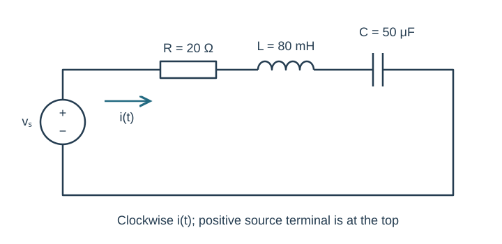
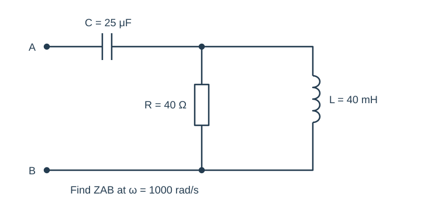
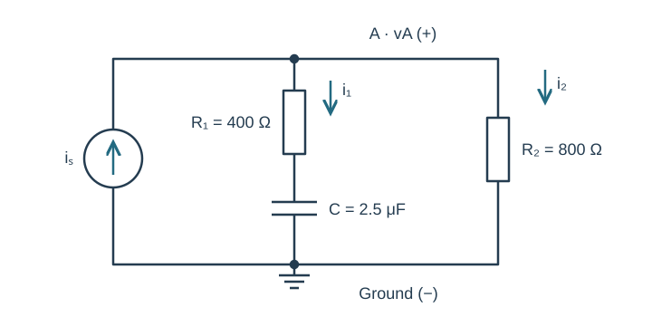
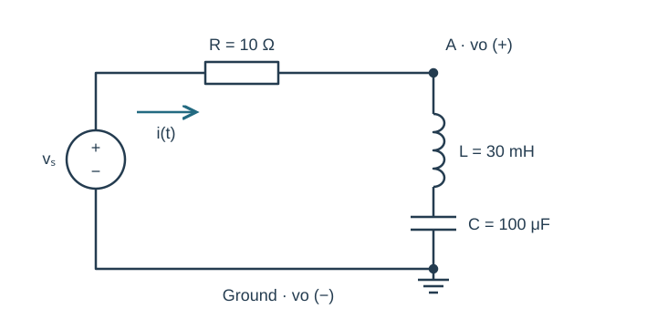
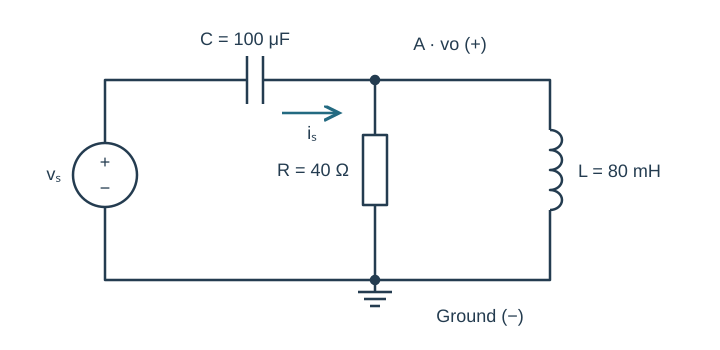

Course practice / Batch 04 / 2026-10-11 PDT
ENGR 202
正弦、相量与阻抗
Sinusoids, phasors & impedance · 第 4 组：HW 1 风格 5 题 + HW 2 风格 5 题
Reconstruct a waveform from peak times
A zero-offset sinusoidal voltage has maximum +6 V and minimum −6 V. Consecutive positive maxima occur at t = 1.0 ms and t = 9.0 ms. Assume this pattern continues for all real t.
- Find amplitude, period, frequency, and angular frequency.
- Write one positive-amplitude cosine expression with t in seconds and principal phase in (−180°, 180°].
- Find v(0), the first downward zero crossing at or after zero, and the first negative minimum at or after t = 0.
- Sketch two periods beginning at zero and label the measured peaks and calculated events.
中文提示（不含解答）
相邻同类峰值间隔是一整个周期；把毫秒换为秒后再写 ωt。
Compare phase after a time delay
Let \(x(t)=6\cos(500t+\pi/4)\;\mathrm V\) and \(y(t)=3\sin[500(t-0.002)+\pi/3]\;\mathrm V\), with t in seconds.
- Write both cosine-reference peak phasors using principal phases in (−180°, 180°].
- Calculate the principal phase difference φy − φx in degrees. Which waveform leads in phase?
- Give the positive time separation smaller than half a period corresponding to that phase difference. Compare the equal-phase features of the two waves, ignoring their different amplitudes.
- Check y(0) from both its original and cosine forms.
中文提示（不含解答）
y 内部的 0.002 是秒；先展开时间平移，再转换正弦基准。
Reciprocals before conversion to polar form
Evaluate \(z=(3-4j)/(1+2j)+1/(-j)\).
- Show the rectangular value of each term before adding.
- Give z in rectangular and polar form.
- Find 1/z and z² in both forms.
- Verify z(1/z) = 1, and identify the sign error caused by incorrectly using 1/j = j. Use principal phases in (−180°, 180°].
中文提示（不含解答）
复数倒数需要有理化分母；分数算完再相加。
Three terms with different sign conventions
Combine \(i(t)=5\cos(900t)-4\sin(900t)-2\cos(900t+\pi)\;\mathrm A\) into one positive-amplitude cosine.
- Give the three individual cosine-reference phasors and sum them in rectangular form.
- Find the resultant magnitude and principal phase and write i(t).
- Verify your result at t = 0 and t = π/1800 s.
- Draw a tip-to-tail diagram with equal scales, real/imaginary current axes, and all vector directions marked. Explain why the last term cannot be treated as a phasor of magnitude −2.
中文提示（不含解答）
负系数要由相位表示；括号中的 π 也必须计入。
Recover a phasor from quarter-period samples
A zero-offset sinusoidal voltage has frequency 250 Hz. Its measured samples are v(0) = −4 V and v(1.00 ms) = −3 V. Measurements are ideal and exact. Use a positive-amplitude cosine representation.
- Find the period and explain why these samples determine the real and imaginary phasor components.
- Recover V in rectangular and polar form, then write v(t) with t in seconds.
- Predict v(2.00 ms) and v(3.00 ms).
- Draw one full cycle with the four sample locations and an equal-scale phasor plot. Label amplitude, time units, and voltage units.
中文提示（不含解答）
先确认 1 ms 在周期中所占比例；取相量实部回到时域时，虚部乘的是负正弦。
A series RLC circuit with cancelling reactances
The source is \(v_s(t)=10\sin(500t+\pi/6)\;\mathrm V\). In series are R = 20 Ω, L = 80 mH, and C = 50 μF. Current i(t) is clockwise, leaving the positive source terminal.
- Draw the cosine-reference phasor-domain circuit and calculate each impedance and the total.
- Find I and write steady-state i(t) as a cosine.
- Calculate VR, VL, and VC with passive voltage references and check their sum against Vs.
- Can the peak voltage of an individual reactive component exceed the source peak in this circuit? Justify using the computed phasors rather than adding magnitudes.

中文提示（不含解答）
源给的是正弦；相量必须先统一为余弦基准。
A capacitor in series with a parallel RL pair
At \(\omega=1000\;\mathrm{rad/s}\), the input path from A passes through C = 25 μF, then reaches two parallel branches to B: R = 40 Ω and L = 40 mH. Find the impedance between A and B.
- Calculate the capacitor and inductor impedances.
- Reduce the parallel pair, then add the series capacitor. Give ZAB in rectangular and polar form.
- Check the parallel pair by adding admittances. State whether the input network is net capacitive or inductive.
- Explain why adding all three component impedances directly would use the wrong topology.

中文提示（不含解答）
先认清 R 和 L 的公共两端；输入电容不属于并联部分。
A source feeding resistive and series-RC branches
The current source \(i_s(t)=0.010\cos(1000t-\pi/4)\;\mathrm A\) points from ground upward into node A. Branch 1 from A to ground contains R₁ = 400 Ω in series with C = 2.5 μF. Branch 2 contains R₂ = 800 Ω. Define vA positive at A and both passive branch currents downward.
- Draw the phasor circuit and calculate the total admittance.
- Find VA in rectangular and polar form and write vA(t).
- Find both branch current phasors and verify KCL.
- Find the capacitor-voltage phasor, positive at its upper plate, and check KVL within the series RC branch.

中文提示（不含解答）
先对 R₁ 与 C 的串联阻抗求倒数，再与另一支路导纳相加。
Voltage across two series reactive elements
The source \(v_s(t)=5\cos(1000t+\pi/18)\;\mathrm V\) drives the series path R = 10 Ω, L = 30 mH, C = 100 μF. Node A is between R and L. The bottom plate of C is grounded. Define vo = vA relative to ground, so the output spans both L and C. Current is clockwise.
- Find the total impedance and current phasor.
- Use an impedance divider to find Vo and write vo(t).
- Find VL and VC separately and verify Vo = VL + VC.
- Determine the phase of Vo relative to Vs. Explain how measuring only the capacitor would change the divider numerator.

中文提示（不含解答）
输出跨越 L 与 C 整个串联组合；分压分子需要与测量端点一致。
A loaded output larger than the source peak
The source \(v_s(t)=8\cos(500t-\pi/3)\;\mathrm V\) feeds a series capacitor C = 100 μF. At node A, R = 40 Ω and L = 80 mH connect in parallel to ground. Define output vo from A to ground and source current from C into A.
- Reduce the load, then find the input impedance and source current phasor.
- Find Vo in rectangular and polar form and write vo(t).
- Calculate both load currents and check KCL. Also calculate the series-capacitor voltage, positive on its source side, and verify KVL.
- Predict vo at t = 0 and t = π/1000 s. For optional LTspice verification, give the source frequency and equivalent sine-source phase, and compare those same two phases in a late cycle after transients settle.
- Explain how the output peak can exceed the source peak without violating the phasor KVL relation.

中文提示（不含解答）
KVL 对复数电压求和，不是对幅值求和；检查仿真电流的参考方向。